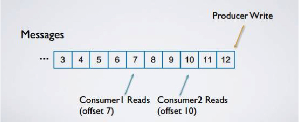

Kafka是什么？
简介
Kafka最初由Linkedin公司开发，是一个分布式、支持分区的、多副本的，基于zookeeper协调的分布式消息系统，它的最大的特性就是可以实时的处理大量数据以满足各种需求场景：比如基于hadoop的批处理系统、低延迟的实时系统、storm/Spark流式处理引擎，web/nginx日志、访问日志，消息服务等等，用scala语言编写，Linkedin于2010年贡献给了Apache基金会并成为顶级开源项目。
Kafka是什么？
- Kafka是一个流平台，在Kafka上可以发布和订阅流数据，并把它们保存起来、进行处理。
- Kafka是一个分布式系统[^分布式系统]，以集群(支持自由伸缩)的方式运行，所以我们总称为分布式消息队列。
- Kafka可以用来存储数据，数据存储的时间长短由你自己定义，并且只要数据还存储在Kafka中，你可以重复读取。
- Kafka可以看成是实时版的Hadoop：
- Hadoop可以存储和定期处理大量的数据文件，而Kafka而可以存储和持续型的处理大型的数据流。
- Hadoop主要应用于数据分析上，而Kafka因其低延迟的特点更合适应用于核心业务上，业务事件发生时，Kafka能够针对这些事件及时做出相应。
kafka的核心思想
Kafka的核心思想就是把消息全部存成一个有序日志，所有的Producer把消息发布到底端，从某一个逻辑上的位移开始顺序读取所有的消息。

Kafka集群结构
我们看下一Kafka的集群架构，如下图：
首先有两个名词定义：Producer和Consumer
- Producer：向Kafka Topic发布消息的程序。
- Consumer：预订Topic并消费消息的程序。
这里又引出了Topic的定义：
- Topic：Kafka将消息以Topic为单位进行归纳，即消息的目录/主题。
讲个故事
我们平时看的知乎，里面有一些知乎主题，大家把与主题相关的内容都发布这个主题板块，如果你喜欢这个主题，可以点击关注主题，这样可以得到主题的最新的消息。
有一天，老师让大家做一个关于中国历史各朝代皇帝的研究，同学们需要去寻找资料。大家发现知乎上有很多类似的话题，有商朝的，有唐朝的，有明朝的……每个朝代都分成了一个个主题，于是大家决定分配，每个人一个主题去研究。
- 这里知乎的主题相当于Kafka的Topic，是一堆消息的集合或者说是分类
- 在主题中发布内容的大牛相当于Kafka的Producer。
- 订阅主题，接受消息的学生相当于Kafka的Consumer。
注意：有一个区别是知乎中的用户是被动推送的消息的，而Kafka中的Consumer是主动拉取消息的，这个我们后面会具体阐述。